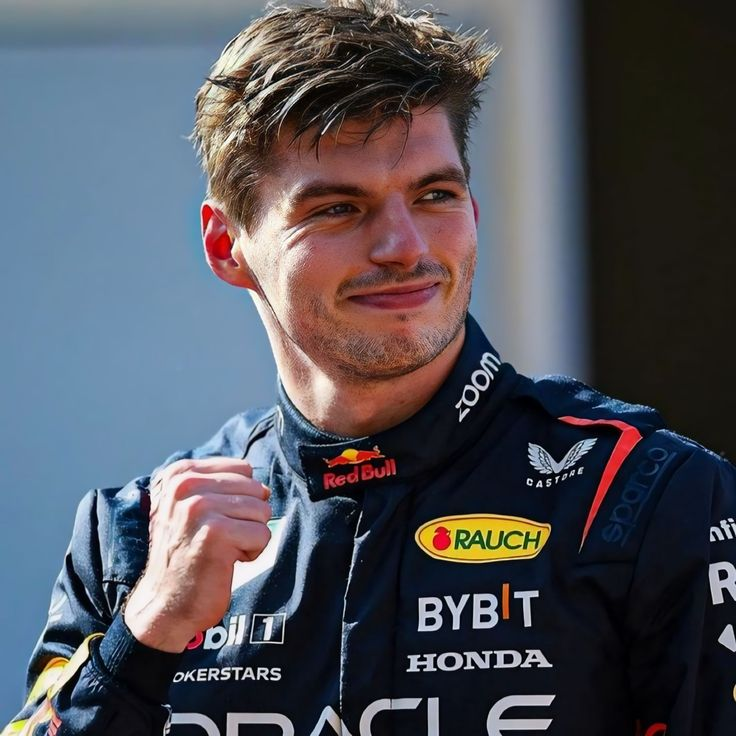

Red Bull Racing · Países Bajos
Max
Verstappen
Piloto neerlandés y cuatro veces campeón del mundo de Fórmula 1 con Red Bull Racing.
Ver su carrera ↓4Títulos
73Victorias
50Poles
136Podios
Cifras tras el GP de Singapur 2026; cambian durante la temporada.
Perfil y trayectoria
De Hasselt a la gloria
Elige un año para repasar los momentos clave.

📷Aquí va la foto de MaxGuárdala como imagenes2/max_verstappen.jpg
Ficha del piloto
- Nombre completo
- Max Emilian Verstappen
- Nacimiento
- 30 de septiembre de 1997, Hasselt (Bélgica)
- Nacionalidad
- Países Bajos
- Número en 2026
- 3 (antes 33 y 1)
- Padre
- Jos Verstappen, también piloto de F1
- Contrato
- Con Red Bull al menos hasta 2030
Línea de tiempo
¿Cuánto sabes de Max?
Quiz de Verstappen
PREGUNTA 1 DE 5
Puntos: 0